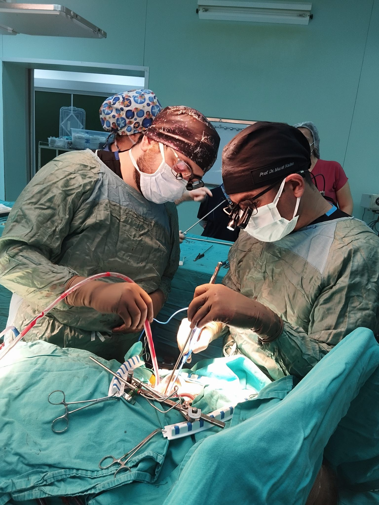
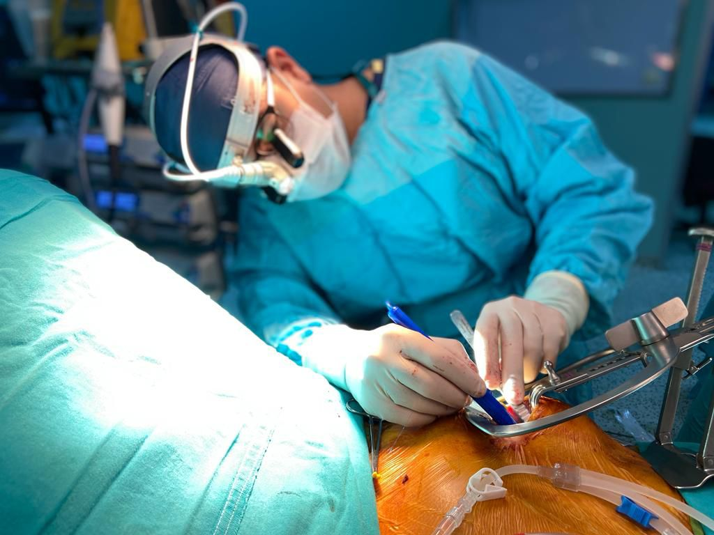

Koroner arter hastalığı, kalp kasını besleyen ve koroner arter adı verilen bir veya birden fazla atardamarda daralma veya tam tıkanma durumudur. Hastalığın esas nedeni “ateroskleroz” adı verilen damar sertliğidir. Koroner arterler içerisinde zaman içerisinde olusan yağ birikimleri öncelikle plak adı verilen ve damar içerisinde tam tıkanmaya neden olmayan kalınlaşmalar şeklinde ortaya çıkarlar. Sonrasında bu plağın yırtılması ve ortaya çıkan pıhtı damar içerisinde tam tıkanmaya yol açar.
Koroner arterler plak oluşumları ile daralmaya başlayınca kalbe daha az kan gitmeye başlar. Özellikle dokuların daha fazla oksijene ve enerjiye ihtiyaç duyduğu egzersiz ve heyecan durumlarında kalbe giden az miktardaki kan kalbin beslenmesi için yeterli olmaz ve yorgunluk, göğüs bölgesinde sıkışma hissi ve çok şiddetli kısa süreli “anjina” adı verilen göğüs ağrısı ortaya çıkar. Hastalardaki bu tablo dinlenme ile ortadan kalkar. Bu noktada hastaların bir doktora başvurması önem taşımaktadır. Eğer koroner arterlerdeki bu daralma aniden tam tıkanıklık oluşturacak şekilde bir değişime uğrar ise hasta kalp krizi geçirir ve kalp kası kalıcı olarak hasar görür. Kalp krizi geçiren bir hastada çok şiddetli göğüs ağrısı vardır ve dinlenme ile bu ağrı geçmez veya tekrar tekrar ortaya çıkar.
Koroner arter hastalığı tanısı konan bir kişide tedavi seçenekleri ilaç tedavisi, balon veya stent yöntemi ile tıkalı damarın açılması ve koroner baypas cerrahisidir. Tıkanık olan damar sayısı, tıkanıklığın derecesi ve damar içerisindeki lokalizasyonuna göre bu üç tedavi seklinden biri seçilir. İlaç tedavisi daha çok ağrı ve nefes darlığı gibi hastanın esas şikâyetlerinin şiddetinin azalmasını sağlar. İlaç tedavisi aynı zamanda hastalığın ilerlemesini de yavaşlatır.
Genel olarak bir veya iki damar hastalığında balon veya stent yöntemi seçilirken, yaygın ve çok sayıdaki damar tıkanıklıklarında koroner baypas cerrahisi tercih edilir.
Koroner baypas cerrahisi, vücudun başka bir bölgesinden alınan atardamar veya toplardamarın bir ucunun tıkanıklık olan damarda, tıkanıklığın ötesine dikilmesi ile yapılan bir köprüleme ameliyatıdır. Bu amaçla kullanılan toplardamarlar (safen ven) genel olarak bacaktan, atardamarlar ise göğüs kemiğinin altından (internal mamaryan arter) veya koldan (radyal arter) alınır. Eğer bacaktan alınan toplardamar veya koldan alınan atardamar kullanılmış ise damarın diğer ucu kalpten çıkan ana damar olan aort damarına dikilir. Göğüs kemiğinin altından alınan atardamar da ise kan akımı direkt olarak kola giden damardan gelir.
Koroner Baypas Cerrahisinde en sık kullanılan damar bacaktan alınan ve “safen ven” olarak adlandırdığımız toplardamarımızdır. Bu damarın tümüyle çıkarılması durumunda bacakta uzun bir kesi yapılmaktadır. Ameliyat sonrası dönemde yara iyileşmesi açısından oldukça sorun çıkaran bu yöntem yerine, artık ufak bir kesi vasıtası ile yerleştirilen bir kamera yardımıyla bu damarı çıkarmaktayız. Bu yöntemle ameliyat sonrası dönemde yara iyileşmesi sorunu büyük oranda ortadan kalkmaktadır. Hastalar çok daha kısa sürede normal hayatlarına dönebilmektedirler.

Kalp ameliyatlarının yapılabilmesi için “Kalp Akciğer Makinesi” adı verilen bir cihaza hastanın ameliyat süresince bağlanması gerekmektedir. Ameliyat süresince vücut kanımız bu makineden geçerek tekrar vücuda geri dönmektedir. Kanın, yabancı bir yüzey ile temas etmesi yapısında bir takım değişiklikler oluşmasına neden olur ki bu değişiklikler kalp ameliyatları sonrası kanama, akciğer sorunu, böbrek yetmezliği, enfeksiyon gibi rahatsızlıklara yol açmaktadır. Mini Baypas olarak tanımlayabileceğimiz teknikte ise kanın yabancı yüzey ile olan teması asgariye indirilmekte ve dolayısıyla kan üzerindeki travma azaltılmaktadır. Bu şekilde ameliyat sonrası komplikasyonlar da azalma sağlanmaktadır.
Bu teknikte kalbe takılacak olan yeni damarlar, kalp durdurulmadan ve açık kalp pompası adı verilen makineye bağlanmadan kalbe bağlanır. Bu yöntem her hasta için uygun bir teknik değildir. Bazı hasta gruplarında avantaj sağlayabilir. Anjiyografi sonucunuza göre ameliyatınızı gerçekleştirecek olan Cerrah Sizin İçin En Uygun Yöntemi Size Önerecektir.
Bu yöntemde göğüsten alınan ve “internal mamaryan” arter adını verdiğimiz damar “Robot” yardımı ile veya endoskopik teknik ile göğüs kemiği ortadan kesilmeden çıkarılır ve sonra göğüsün yan tarafından veya meme altından yapılan ufak bir kesi ile kalbin ön yüzünde seyreden ve “LAD” adını alan koroner artere dikilir. Bu yöntem sadece tek damarı tıkalı olan hastalarda uygulanabilir, diğer damar da tıkanıklık var ise stent yöntemi ile damarlarda açıklık sağlanmaya çalışılır. Bu yöntem de her hasta için uygun bir yöntem değildir. Belirli hasta gruplarında uygulanabilir.
Koroner Baypas ameliyatı tüm dünyada en sık yapılan kalp ameliyatıdır. Büyük bir ameliyattır ve hastalar ameliyat sonrası 1 yada 2 gün yoğun bakım ünitesinde takip edilir. Bu dönemde hastaların kan basınçları ve kalp ritimleri kontrol altında tutulur. Akciğerlerin tam kapasite ile çalışması için tedaviler uygulanır. Hastalar sabit hale geldikten sonra servise alınırlar ve burada da 4-5 gün takip edildikten sonra taburculukları planlanır. Hastaların tam olarak normal hayatlarına dönmeleri ise yaklaşık bir aylık bir süreçtir. Ameliyat olmanız hastalığın tekrarlamayacağı anlamına gelmemektedir. Hastalığa neden olan risk faktörleri ortadan kaldırılmaz ise kalbe yeni takılan damarların tekrardan tıkanma şansı yüksektir.
Bu nedenle ameliyat olan hastaların;
Koroner baypas ameliyatı olan hastaların yukarıda belirttiğimiz konulara dikkat etmeleri durumunda sorun yaşama ihtimalleri düşüktür. İyi bir koroner baypas ameliyatında özellikle göğüsten alınan damarların açık kalma oranları 20 yılda %90 düzeyindedir.
Son yılların en tartışmalı konusu. Tüm dünyada ve ülkemizde en sık görülen ve en sık ölüm nedeni olan hastalığın tedavisinde hangi seçenek daha iyi sorusunun cevabi her kesime göre değişiklik göstermekte ve kafalarda birçok soru işaretlerine yol açmaktadır.
Öncelikle tıpta en önemli prensiplerden biri olan “her hasta farklıdır, dolayısıyla her hasta için tedavi farklılıklar gösterebilmektedir” kuralını hatırımızda tutmamız gerekir. Kısaca sizin için uygun olan bir yöntem diğer bir hasta için uygun olmayabilir.
Konumuza dönecek olursak, son yıllarda stent teknolojisinde ortaya çıkan yenilikler tüm dünyada ve ülkemizde damar tıkanıklıkların tedavisinde bu yöntemin daha sık kullanılmasına yol açmıştır. Eskiden koroner baypas ameliyatı yapmış olduğumuz birçok hastayı bugün stent yöntemi ile tedavi etme şansına sahibiz. Ancak belirli hasta gruplarında koroner baypas cerrahisi sonuçları stent yöntemine göre üstünlükler göstermektedir.
Son yapılan araştırmalar stent uygulanan hastalarda tekrardan tıkanma ve yeni işlem gerekliliği oranının yüksek olduğunu göstermiştir.